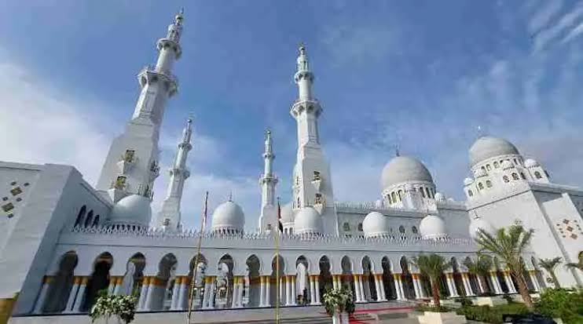
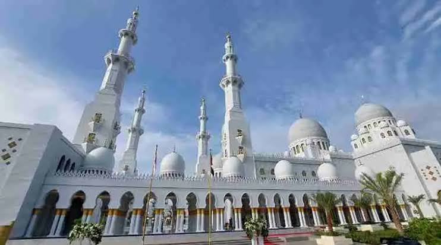
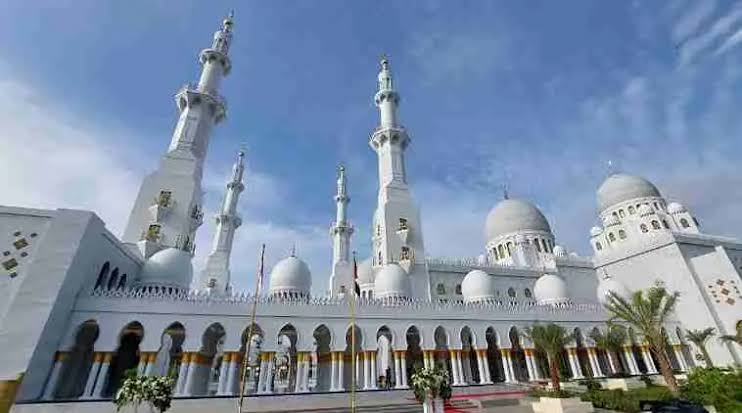

Galeri Wisata Religi
 



Pekalongan memiliki berbagai tempat wisata religi yang menarik dan kaya akan sejarah. Mari jelajahi pesona dan keindahan tempat-tempat ini.

Untuk informasi lebih lanjut, silakan hubungi kami di:
Email: info@wisatareligi-pekalongan.com
Telepon: (021) 123-4567